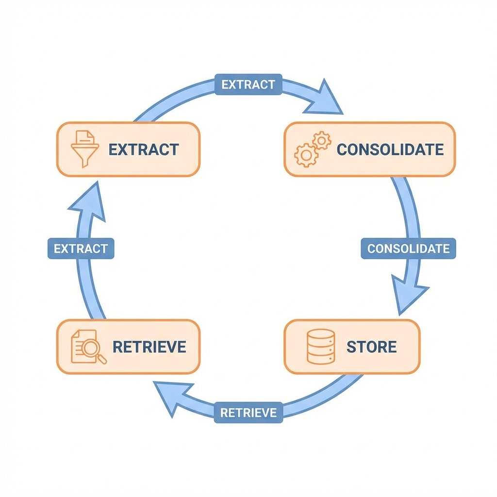
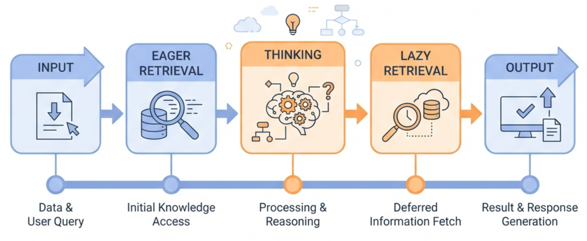

Day 5: Context Engineering
Context Engineering
The Context Window Constraint
{kind=link}
Finite Application Memory
- Constraint: Models have a limit (8k, 128k, 1M tokens).
- Cost: More context = Higher Cost + Higher Latency.
- Challenge: “Lost in the Middle” phenomenon.
Outline
- Context Engineering: Managing the input window.
- Sessions: Handling the “Now” (active conversation).
- Memory: Handling the “Past” (long-term storage).
- Production: Privacy, Lineage, and Ops.
Sessions
What is a Session?
{kind=link}
Short-Term Interaction State
- Scope: A single conversation thread or workflow.
- Storage: Ephemeral (In-memory or fast KV store like Redis).
- Goal: Coherency during a task.
Multi-Agent Sessions
{kind=link}
Shared vs. Private State
- Shared State: All agents see the main thread (e.g., Slack channel).
- Private State: Agents have internal “scratchpads” or side-bars.
- Interoperability: Standardizing message formats across frameworks (LangChain, CrewAI).
Memory
What is Memory?
{kind=link}
Long-Term Persistence
- Scope: Across sessions, days, or years.
- Storage: Durable (Vector DB, Graph DB, SQL).
- Goal: Personalization and Learning.
Types of Memory
{kind=link}
Structure vs. Meaning
- Procedural: “How to do things” (Few-shot examples).
- Semantic: “Facts and Knowledge” (RAG).
- Episodic: “What happened” (User history).
- Multimodal: Images, Audio, Attachments.
Memory Lifecycle
 Consolidate -> Store -> Retrieve -> Extract…">
{kind=link}
The Memory Loop
- Extraction: Identifying useful info from a session.
- Consolidation: Merging new info with old (summarization).
- Retrieval: Fetching relevant info for the current context.
Deep Dive: Generation Strategy
{kind=link}
Blocking vs. Background
- Blocking: Wait for memory to update before replying (Consistent but Slow).
- Background: Reply immediately, update memory async (Fast but potentially inconsistent).
- Memory-as-a-Tool: Agent decides when to save a memory.
Memory Provenance
{kind=link}
Trusting the Source
- Lineage: “Where did this fact come from?” (User? Tool? hallucination?).
- Confidence: High (User explicitly stated) vs. Low (Inferred).
- Attribution: Citing the source message or document.
Memory Retrieval
Timing and Trigging
 ‘Eager Retrieval’ -> ‘Thinking’ -> ‘Lazy Retrieval’ -> ‘Output’.">
{kind=link}
When to remember?
- Eager: Retrieve before generating (RAG).
- Lazy: Retrieve during generation (Tool use).
- Trigger: Similarity search vs. Keyword match vs. Time-based.
Inference with Memories
{kind=link}
Injecting State
- System Instructions: “You are helpful. (User info: Name=Dave, Lang=Python)”.
- Conversation History: Injecting relevant past summaries.
- Tools: Giving the agent a
search_memory()tool.
Production Considerations
Privacy & Security
{kind=link}
The Risk of Remembering Too Much
- PII Leakage: Storing sensitive data in vector stores.
- Data Poisoning: Malicious user input becoming a “fact”.
- Forgetting: The “Right to be Forgotten” (GDPR).
Evaluation
{kind=link}
Did we remember correctly?
- Recall: Did we find the right memory?
- Precision: Did we avoid irrelevant noise?
- Hallucination: Did we invent a fake memory?
Summary
Key Takeaways
- Context is Finite: Engineer it carefully.
- Sessions are Now: Manage short-term state for coherency.
- Memory is Past: Extract, Consolidate, and Retrieve for long-term value.
- Provenance is Key: Know where your facts came from.